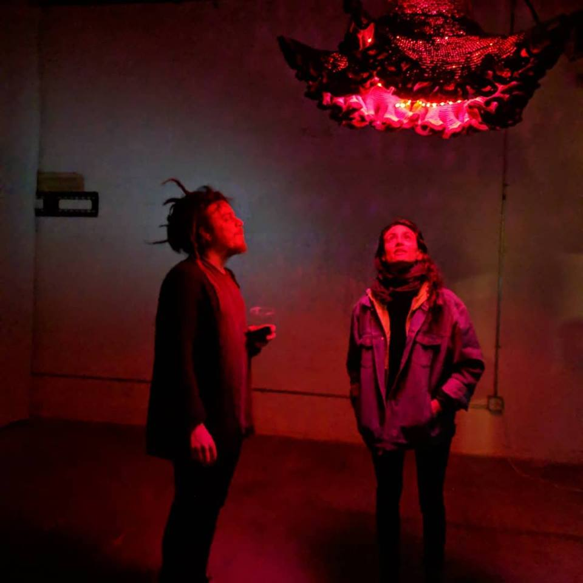
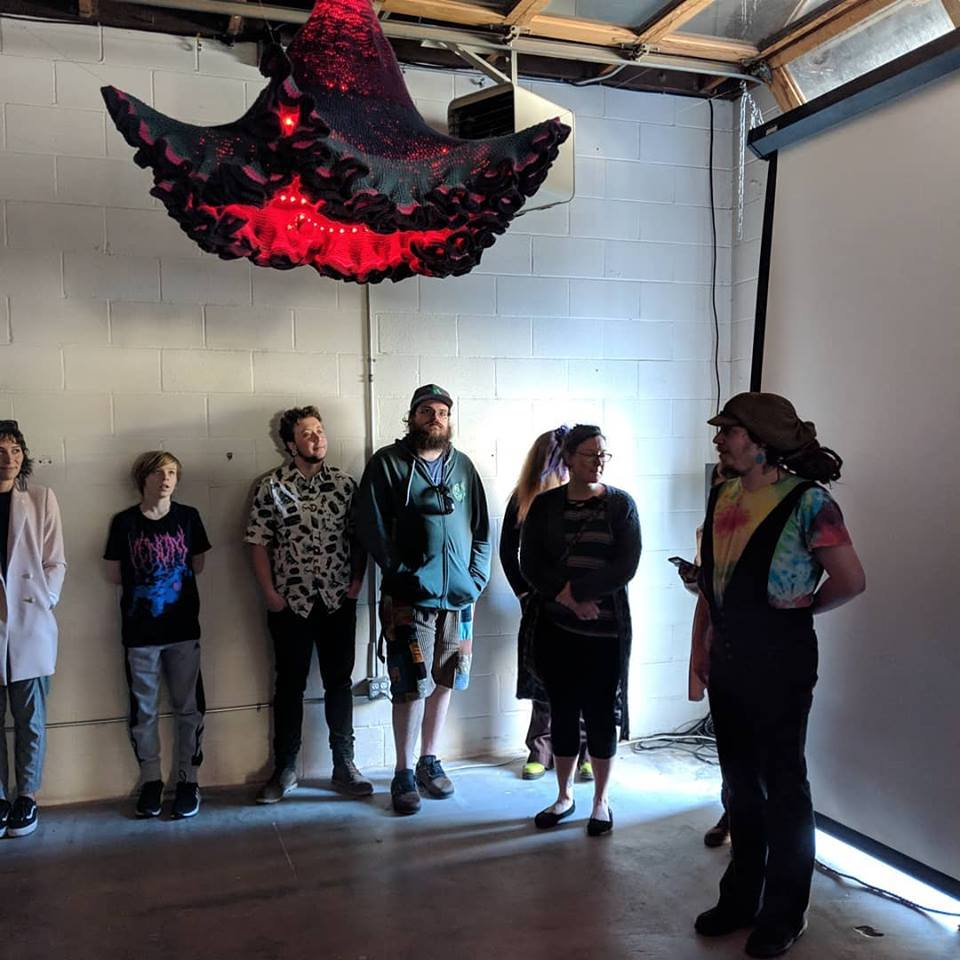

Here is a selection of recent art projects with images and/or video.
The Fabric of Spacetime
An interactive model of a young universe (much less than one second old), created from a large hand crocheted hyperbolic manifold embedded with 264 individually programmable neopixel LED, controlled by 6 motors, a motion sensor, and an Arduino MEGA microcontroller.


Electroluminescence
A handmade synthesizer, created from hand crocheted mushrooms embedded with conductive stuffing and controlled by arduino.


Hello? The Interdimensional Communication Device
Collaboration with Aarohi Bhaway. A homemade telegraph machine connected to a programmed infinity mirror attatched to the end of a salvaged bomb siren. Use it to send messages into the eternal void.